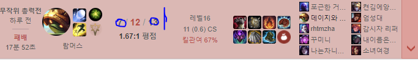
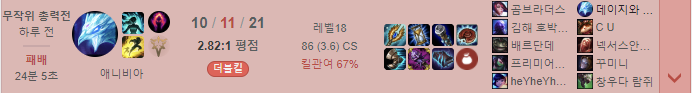
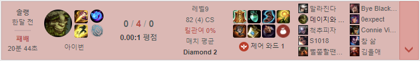

그는 뛰어난 실력으로 여러 프로구단에 프로 제의를 받았지만, 그중에서 사적으로 친분이 있고 유명한 대기업인 골든스눕퍼스에 들어갔다.
그는 그 구단에 들어가서 창의적인 플레이를 구사하며 팀원내에서 가장 비전있는 유망주로서 뛰어난 기량을 보여주었다.
그러나 구단내에 일어난 스트리밍 서비스 및 유희왕 서비스에 문제가 발생하며 혼란스러운 상황이 발생하여 팀이 해체되었다.
그것도 모자라, 그는 일명 ”오 나의 구멍“ 의 불미스러운 사건으로 인해 데뷔하기도 전에 암묵적인 은퇴(?)를 하게 되었다. 이러한 이유들로 인해서 사람들은 그를 ”비운의 프로게이머“라고 부른다.
그 이후로 그는 여러가지 챔프로 고의트롤을 하는 등 여러가지 면모로 불안정한 모습을 보이기도 한다.


